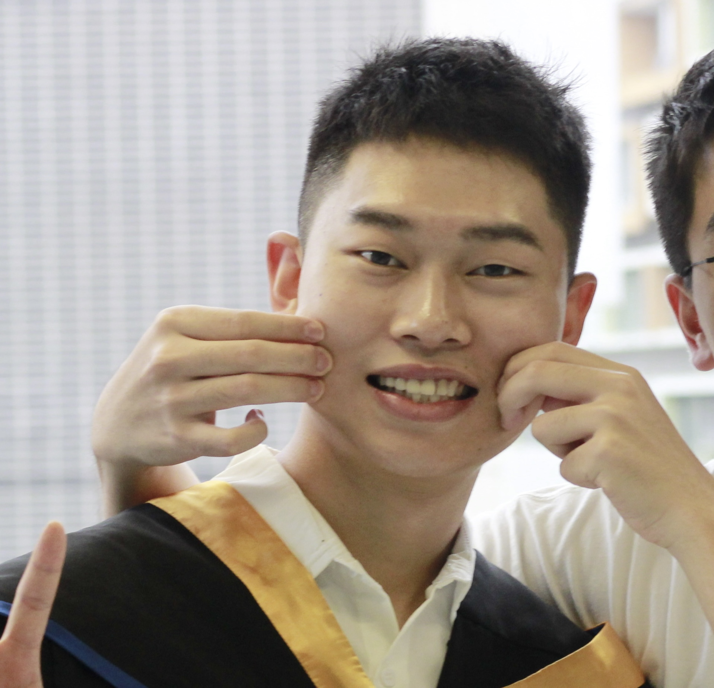

The Hong Kong University of Science and Technology (Guangzhou)
Advisor: Prof. Ningxin Su. Research areas include embodied AI, VLA models, world models, autonomous agents, and efficient distributed inference systems.
Embodied AI · VLA · Robotic Manipulation
I am a Ph.D. student in Internet of Things and Artificial Intelligence at The Hong Kong University of Science and Technology (Guangzhou), advised by Prof. Ningxin Su in NEBULIS Lab.
My research focuses on embodied intelligence, vision-language-action models, robotic manipulation, world models, reliable decision-making, and efficient inference for autonomous agents in physical environments.

Background
Advisor: Prof. Ningxin Su. Research areas include embodied AI, VLA models, world models, autonomous agents, and efficient distributed inference systems.
Worked with the Artificial Intelligence and Computer Vision Lab. Coursework covered machine learning, big data analytics, database systems, operating systems, software engineering, algorithms, and web mining.
Minor in Computer Science and Technology at Beijing Normal University-Hong Kong Baptist University United International College.
Current Focus
This work studies replanning overhead in long-horizon embodied agents and proposes a budgeted replanning framework that adapts replanning decisions, modes, token budgets, and latency SLOs. It also introduces context compression for reducing inference latency and token use while preserving task-critical information.
Studying action reliability under appearance changes and task-semantic changes, with the goal of keeping actions stable when semantics are invariant and separating actions correctly when goals, constraints, or order change.
Building data-grounded simulation tasks for marine robots using bathymetry, currents, tides, and pollution fields, with evaluation settings for navigation, inspection, scanning, cleanup, and multi-agent collaboration.
Improving object selection, spatial-relation understanding, and interaction-history use in VLA policies through structured representations of task semantics.
Modeling long-horizon task planning as hierarchical concept prediction, symbolic dependency repair, and behavior-tree compilation for more executable robot plans.
Practice
Worked on rainy-season logistics route-planning optimization, spatial-temporal road-network analysis, Monte Carlo rainfall simulation, internal algorithm-module integration, and AWS Batch workflow testing.
Supported product launch, website operations, cross-border e-commerce workflows, and overseas market analysis using Python and R.
Annotated facial-feature data and supported feature extraction, image encoding, and low-resolution image optimization for face-recognition workflows.
Recognition and Tools
Contact